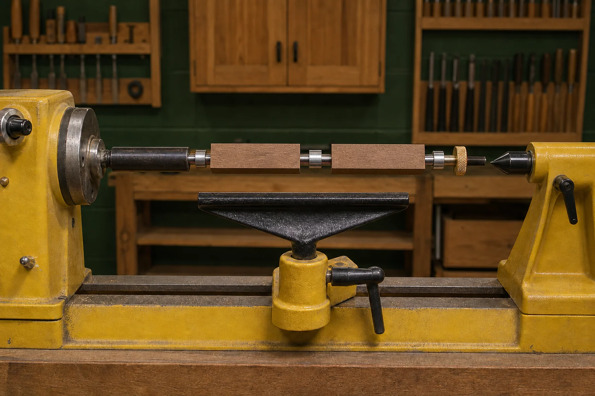
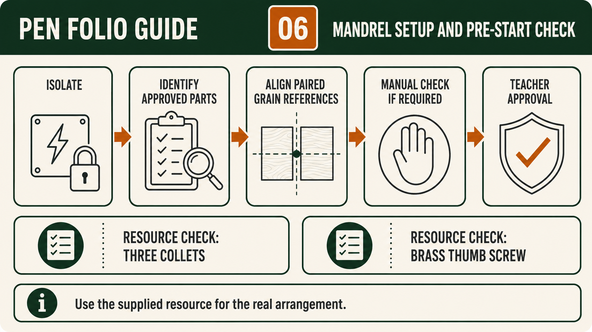
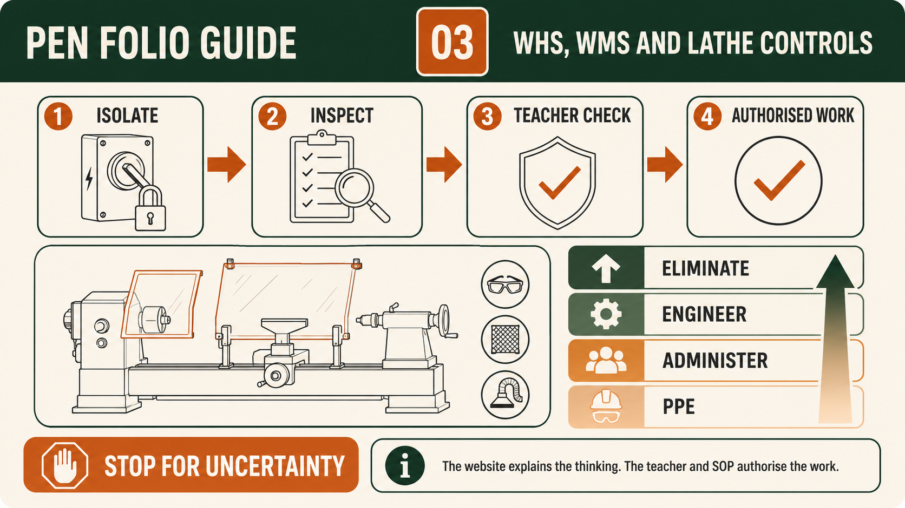

Your work
Student details
Your entries save automatically in this browser. Use Print / Save PDF before leaving the page.
Weeks 7-8
This module
Understand between-centres turning, identify the approved mandrel components and verify the supervised lathe setup.
Theory 1
Understanding between-centres turning and the approved Pen mandrel
Between-centres turning is a broad woodturning principle in which a timber workpiece is supported along a central axis and rotated so its form can be developed evenly around that axis. The learning value is not simply producing a round shape. Students learn to read the behaviour of timber, maintain attention to alignment, compare one section with another and make gradual quality decisions. In the Pen project, these ideas help explain why preparation, grain orientation and accurate references matter before any turning begins. They also show why an apparently small product still demands disciplined planning, safe work habits and repeated checking.
The approved Pen mandrel process is a specific application, not a general instruction for all between-centres work. The supplied Pen Making resource, exact kit information and teacher demonstration determine how the two prepared timber parts are supported and arranged for this project. Students must not transfer a setup from another pen kit, a video or a different lathe task. Although the broader principle involves rotation around a shared axis, the approved mandrel controls the kit-specific relationship between the parts. Actual setup, securing, checks and authorisation are governed by the workshop SOP or SWMS and the teacher responsible for the lesson.

Alignment is central to both the turning principle and the visual quality of the Pen. Earlier in the project, a line is placed along the timber length crossing the centre so the paired grain can be realigned later. When the prepared parts are placed on the approved mandrel, the centre and grain line should correspond as shown in the authoritative resource. This does not create a machine setting or a measurement. It is a visual reference that helps preserve the original relationship between the two Pen bodies. A teacher check before progression reduces the chance of mixed, reversed or rotated parts weakening the final grain continuity.
Turning quality develops through controlled observation rather than rushing towards a finished appearance. As the timber rotates, students learn to judge whether the developing form appears balanced, whether the surface is becoming more consistent and whether both Pen bodies remain visually related. These are quality principles, not permission to choose tools, settings or techniques independently. The teacher demonstration defines the approved practical actions, while local procedures control workholding, task-specific PPE, dust management and stop points. If movement, sound, surface condition or equipment behaviour seems abnormal, the student stops and reports it instead of attempting an improvised correction.
Evidence should show how the student applied the principles, not merely that the lathe was used. Useful progressive records may include the paired parts with their orientation line aligned, teacher approval of the mandrel arrangement, an observation made during a quality checkpoint and a later comparison of the two developing Pen bodies. Captions should identify the stage, the purpose of the check, the decision made and the result. A statement such as 'turning completed' provides little evidence. A stronger explanation connects alignment and gradual checking to grain continuity, surface quality and the intended outcome of the approved Pen kit.
Understanding the difference between a principle and a procedure prevents unsafe assumptions. Between-centres turning explains why axis, support, balance and progressive checking matter across many woodturning tasks. The approved Pen mandrel process explains how those ideas are applied to this particular supplied kit under local school controls. Students are expected to understand the reasons, recognise quality indicators and follow the authorised sequence, but not invent dimensions, bush sizes, speeds, settings or construction details. This combination of conceptual understanding and disciplined compliance is part of becoming a capable workshop practitioner who can explain both what was done and why it mattered.
- Explain between-centres turning as rotation around a controlled shared axis.
- Treat the approved Pen mandrel as a kit-specific process governed by supplied instructions.
- Align the paired centre and grain line before the teacher checkpoint.
- Use gradual quality checks and report any abnormal condition immediately.
- Record alignment, approval, observations and outcomes as progressive folio evidence.
Theory 2
Assembling the approved mandrel with three collets and brass thumb screw
Assembling the approved Pen mandrel is a preparation and quality-control stage, not simply a matter of placing parts together. The supplied Pen Making resource shows the approved mandrel with three collets and a brass thumb screw. These verified features help students identify the correct equipment for this project, but they do not provide permission to invent an arrangement, spacing, tightening method or operating setting. The kit instructions, teacher demonstration and workshop SOP control the actual setup. Before beginning, students should read the relevant stage, organise the supplied parts and understand which checks must be completed before teacher approval is requested.
Part identification is important because a mandrel system is kit-specific. Students should confirm that the approved mandrel, all three collets and the brass thumb screw belong to the Pen project being completed. The parts should be kept together in a clean, clearly organised area so that nothing is mixed with another student’s kit or unrelated workshop equipment. Counting the three collets is a useful check, but competent preparation involves more than counting. Students should compare the parts with the approved resource, recognise the brass thumb screw and report any missing, damaged or uncertain item before attempting to continue.
Clean staging supports both accurate assembly and careful inspection. Dust, loose residue or unrelated parts can make it harder to identify the correct components and judge whether they are ready for use. Students should inspect the approved mandrel components for visible damage, contamination or unusual condition without attempting an unapproved repair. The prepared timber parts should also be kept together, clearly identified and protected from being mixed, reversed or rotated. If any item does not match the resource or teacher demonstration, the correct response is to stop, preserve the arrangement and ask the teacher rather than forcing parts together or borrowing a component from another kit.

The centre and grain lines on the two prepared timber parts provide the main visual reference for their relationship. When the parts are placed on the approved mandrel, these lines should align so that the paired grain orientation corresponds. This alignment is not a substitute for kit instructions and does not create a dimension, bush schedule or machine setting. Its purpose is to preserve the visual connection established when the original timber was marked. Before progressing, students should compare the two parts carefully, check that neither has been reversed or rotated, and obtain the required teacher confirmation that the relationship matches the authoritative Pen Making resource.
The teacher demonstration and workshop SOP govern how the approved mandrel is actually assembled, secured and checked. Students are expected to understand why the three collets, brass thumb screw and aligned timber parts must be identified and inspected, but they must not invent an order, tightening value or correction method that is not stated in the controlling sources. If a part does not sit as demonstrated, the grain lines no longer correspond, or the assembly appears damaged or uncertain, work must stop. Teacher authorisation is the control that confirms the setup is suitable before the next practical stage begins.
Strong folio evidence proves competent preparation by showing what was identified, checked and approved. A useful evidence set may include a clear overall photograph of the clean staging area, a closer photograph showing the approved mandrel with three collets and brass thumb screw, and a record of the two prepared timber parts with their centre and grain lines corresponding. Notes or captions should explain the purpose of each check, identify any issue found and record the teacher checkpoint. Evidence should represent the actual preparation process rather than a photograph rearranged later, because authentic records connect responsible setup decisions to grain continuity, safe practice and the quality of the finished Pen.
- Confirm the approved mandrel, three collets and brass thumb screw against the supplied Pen Making resource.
- Stage all parts in a clean area and keep them separate from other kits and equipment.
- Inspect for missing, damaged, contaminated or uncertain components before assembly.
- Place the prepared timber parts so their centre and grain lines correspond.
- Record the completed checks and obtain teacher approval before progressing.
Theory 3
Lathe pre-start checks and secure approved workholding
A lathe pre-start check is a deliberate safety and quality routine completed before any Pen turning begins. Its purpose is to confirm that the machine, approved workholding, surrounding area and student are ready for the planned task. The check is not a quick glance and it is not replaced by having used the lathe before. Conditions can change between lessons, equipment can be moved, and parts can be assembled incorrectly. For this reason, the teacher’s approval and the school’s current lathe SOP control the work. The website can explain the thinking, but it cannot authorise a setup or replace direct supervision.
Inspection or adjustment begins with isolation as required by the approved procedure. Isolation prevents the machine from starting while guards, workholding, clearance or other setup conditions are being examined. Students should never assume that a stationary machine is safe to touch or adjust. The teacher demonstration and current SOP define how isolation is confirmed and when it may be removed. If a student cannot verify the machine’s condition, does not understand a control or notices something different from the demonstrated setup, the correct response is to stop, leave the setup undisturbed and ask the teacher.

Secure approved workholding is essential because the Pen parts must remain controlled around the intended axis during rotation. The student checks that the approved mandrel arrangement and supported parts match the supplied Pen Making resource, kit instructions and teacher demonstration. The centre and grain lines should still correspond where this forms part of the approved setup. Any visible looseness, damaged component, unexpected gap or uncertain assembly must be reported rather than corrected through guesswork. No student should invent a tightening value, spacing or arrangement. Teacher approval confirms that the workholding is suitable before the machine is started.
The pre-start routine also considers guards, clearance and the tool rest where these checks are required by the school’s procedure. The aim is to verify that protective features are present and correctly positioned, that the rotating assembly has room to move without contacting another part, and that the tool rest is in the approved condition for the demonstrated task. A manual rotation check may be required while the machine remains isolated so that possible contact, obstruction or abnormal movement can be identified before powered operation. Students follow the approved method only and stop immediately if anything binds, touches or feels uncertain.
Personal preparation matters because rotating machinery can catch loose items quickly. Before starting, students check clothing, hair, jewellery and other loose objects according to the current SOP and teacher directions. The work area should be free from unnecessary tools, offcuts and materials that could interfere with movement or concentration. Task-specific PPE must be selected and worn as directed, but PPE is only one layer of control. It does not compensate for insecure workholding, missing guards, poor clearance or an unapproved setup. Good preparation combines engineering controls, approved procedures, teacher supervision and appropriate PPE.
A concise evidence record should prove that the pre-start process was actually completed without pretending that a photograph makes the setup safe. Useful evidence may include the date and project stage, the checks completed, the teacher approval point and any issue that caused work to stop. A photograph may show the isolated, organised setup where permitted, but the caption should explain what was verified rather than claim that the image alone proves compliance. If a concern was found, record the observation, the decision to stop and the teacher-directed outcome. This demonstrates disciplined judgement and links safe preparation to reliable Pen manufacture.
- Isolate the lathe before inspection or adjustment as required by the approved procedure.
- Verify approved workholding, guards, clearance and tool-rest condition without inventing settings.
- Complete the required manual rotation check only by the teacher-approved method.
- Control loose items, organise the work area and use task-specific PPE as directed.
- Stop for uncertainty and obtain teacher approval before powered operation.
Guided practice
Weeks 7-8 knowledge checks
Choose an answer, check it and use the progressive hints and feedback to improve.
Apply your learning
Scaffolded written responses
Write first, use the feedback prompts, then compare your reasoning with the model response.
Finish the two-week block
Save your evidence
Your work saves in this browser, but browser storage is not the official submission. Save the completed page as a PDF before changing devices or clearing browser data.
No marks, answers or personal information are sent from this webpage.